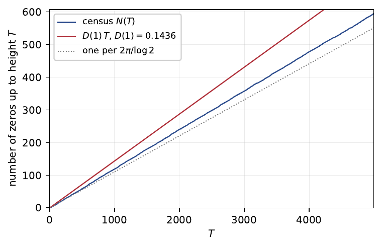

The most famous unsolved problem in mathematics is a claim about alignment. In 1859 Riemann conjectured that the nontrivial zeros of his zeta function all sit on one vertical line in the complex plane. Every such zero anyone has ever computed does sit there. Nobody can prove they must. The order is overwhelming, and unexplained.
This post is about a cousin object whose zeros do the opposite. Below are all 595 solutions of $P(s) = \tfrac14$ in a computational window: real part between 1.25 and 2.72, height (imaginary part) up to 5000. Here $P(s) = \sum_p p^{-s}$ is the prime zeta function, the same kind of series as zeta but summed over the primes only.

The real parts scatter from 1.2615 to 2.5679. No line holds them, vertical or otherwise, and this is not numerical fog: each position is computed to fifteen digits. Where Riemann's zeros are believed to align and cannot be proved to, these demonstrably refuse.
The refusal is not the story. The story is what survives it: the cloud has an exact density. By the end I will write down a formula for the number of zeros per unit height, in which every prime appears weighted by the probability that it outruns all the other primes combined, check it against the 595 dots to about one percent, and tell how a check along the way corrected a reference book by exactly one. First, where the equation comes from.
Where the equation comes from
It begins with a refusal of my own: do not simplify $2 \cdot 3 \cdot 5$ to 30. Keep the assembly. Multiplication joins two numbers at a time, so building 30 from its primes means choosing an order for 2, 3, 5 (six ways) and choosing which join happens first (two ways): twelve assembly histories, all wearing the label 30.

Seen this way, an integer is a macrostate: one label worn by many microstates, the way one temperature reading is worn by many arrangements of molecules. Forget the nesting and the twelve collapse to six; forget the order instead and they collapse to three; forget everything and you hold the bare number. The forgetting is measurable: the entropy of 30 is $\log_2 12 \approx 3.6$ bits. (For a squarefree number like 30 these counts depend only on how many primes appear; repeated primes make the counting subtler, a detail that returns at the end.)
Many microstates per label is a situation physics has one machine for. Give the number $n$ an energy $\log n$, so that energies add exactly when sizes multiply, weight each microstate by the Boltzmann factor $n^{-s}$ with $s$ an inverse temperature, and sum:
$$Z(s) = \sum_n \frac{g(n)}{n^s},$$
where $g(n)$ counts the histories of $n$. Each level of forgetting keeps its own $g$ and gets its own partition function.
At the fully forgotten bottom, $g = 1$ and $Z$ is Riemann's zeta. That reading is not mine and not new. Euler's product,
$$\zeta(s) = \prod_p \frac{1}{1 - p^{-s}},$$
is, symbol for symbol, the partition function of a Bose gas whose modes are the primes with energies $\log p$: the exponent of $p$ in a factorization is an occupation number, and its average, $1/(p^s - 1)$, is Planck's distribution. Bernard Julia called it the free Riemann gas in 1990, and the folklore is older still. My day job is computing heat transport in crystals, where the same product appears with $\hbar\omega$ in place of $\log p$, so this formula and I were already acquainted.

At the fully remembered top sit the trees, and their partition function satisfies an equation you can say in one breath: a tree is a prime, or a pair of trees.
$$Z_T(s) = P(s) + Z_T(s)^2$$
Solving the quadratic gives $Z_T = \tfrac12\left(1 - \sqrt{1 - 4P}\right)$, and the square root, the same one that appears in every count of binary trees since Catalan, fails exactly where $P(s) = \tfrac14$. On the real axis this happens once, at $\sigma^* = 2.5973851271346716$, where $Z_T = \tfrac12$ exactly. Every rung of the forgetting ladder has such a ceiling, an inverse limiting temperature: 1 for zeta, then 1.3994, 1.9885, 2.5974 as memory is restored.
In the complex plane, the condition $P(s) = \tfrac14$ marks the singular points of the tree gas. Those are the 595 dots of the opening figure; I call them zeros because they are the zeros of $P - \tfrac14$. Here the literature goes quiet. Zeta's zeros are among the most studied objects in mathematics; the zeros of $P$ have a thin literature; its level sets, as far as I could find, and I searched hard, had never been studied at all. The first questions were the crude ones: where, and how many?
The band
The right edge of the cloud is exact. On the real axis every term of $P$ points the same way, so $P(\sigma)$ is the largest $|P|$ can be anywhere on that vertical line. Past $\sigma^* = 2.597\ldots$, even perfect alignment of every term leaves $|P| < \tfrac14$, and solutions are impossible by the triangle inequality. The rightmost zero in the census sits at 2.5679, close under the wall.
The left edge is soft. Moving left the terms grow, cancellations of every depth become available, and the zeros keep coming; nothing stops them before the edge of convergence at $\operatorname{Re}\, s = 1$. The window was cut at 1.25 for practical reasons. I will come back to what lies beyond.
Why no line? A line is usually what a symmetry buys, and zeta has one: a functional equation that reflects the plane about the critical line, which is part of why a line there is even plausible. $P - \tfrac14$ has no such reflection, and inside the band no vertical line is distinguished from its neighbors. My first reaction to the scatter was disappointment: the object had failed to be like the famous one. It took me longer to see the trade. Zeta's order is conjectured and unexplained; this disorder is demonstrable, and it obeys a law. To find the law you need the right picture of $P$, which is a shop full of clocks.
The clocks
Fix the real part $\sigma$ and climb, letting the height $t$ run. Each prime contributes to $P$ the term $p^{-\sigma - it}$: a hand of fixed length $p^{-\sigma}$ turning at constant speed $\log p$. Chain the hands tip to tail and anchor the chain at the point $-\tfrac14$; the free end then traces out $P - \tfrac14$. A zero is a moment when the chain folds exactly back onto the origin. Every hand in the right place at once: a conspiracy.
The 2-hand is the longest and the slowest, one revolution per $2\pi/\log 2 \approx 9.06$ units of height; the hands of the larger primes are shorter and quicker. The configuration never repeats. Repetition would need two speeds with a common measure, positive integers $a$ and $b$ with $a \log 2 = b \log 3$, say; but that equation says $2^a = 3^b$, one number with two different prime factorizations, precisely what unique factorization forbids. The theorem schoolchildren use to reduce fractions is the reason these clocks never revisit a configuration.
Never repeating is not lawlessness. Rotations with incommensurable speeds sweep their possible configurations evenly (Weyl's equidistribution theorem, which needs exactly this absence of rational relations), so the fraction of time the hands spend in any arrangement is a definite number. No period, and exact statistics.
My grandfather poured wine by eye from the damigiana, the fat glass demijohn in its straw cage that lived in his cellar. He never measured, and no two of his pours were ever quite the same, and none was careless. I thought about him while watching these hands: rhythms that share no common measure never repeat, and are not disordered either. He would have shrugged at the theorem and recognized the fact.

{kind=link}
An exact formula for disorder
Here is how clocks count zeros. Stand on the line $\operatorname{Re}\, s = \sigma$ and watch the tip while $t$ climbs. By the argument principle, the accountant of complex analysis, every net lap the tip makes around the origin registers one zero lying to the right of your line. Density of zeros equals winding rate. And winding is something a dominant hand does.
Suppose, at some moment, one hand is longer than the anchor and all the other hands combined. Then the tip has no choice: it circles the origin at that hand's speed, because the rest of the chain is too short to pull it away. While the dominance lasts, that prime drives the winding; when no hand dominates, the tip wanders without net progress. Averaged over the equidistributed phases (the mean motion theorem of Jessen and Tornehave makes the average exact), each prime drives for a definite share of the time, $q_p(\sigma)$: the probability that the $p$-hand outreaches the anchored sum of everything else. The density follows:
$$D(\sigma) = \frac{1}{2\pi} \sum_p (\log p)\, q_p(\sigma),$$
zeros per unit height to the right of the line at $\sigma$. Each prime's speed, times its share of the time, summed. Nothing else survives the averaging.
To be precise about what is new here: that counts of this kind grow linearly with height is classical, from the theory of almost periodic functions built by Harald Bohr's school a century ago, which also expresses the slope abstractly. The new part is the evaluation, the slope in closed form as prime-by-prime dominance probabilities, for an equation that, as far as I know, nobody had studied.
At $\sigma = 1.30$ the tug-of-war goes $q_2 = 0.624$, $q_3 = 0.148$, $q_5 = 0.042$, $q_7 = 0.017$: the 2-hand rules five eighths of the time, and even the 7-hand takes its turns. The naive count stops at the biggest hand: if the 2-hand always dominated, the tip would lap once per revolution, one zero per 9.06 of height, a density of $\log 2 / 2\pi \approx 0.110$. The truth at $\sigma = 1.30$ is $D = 0.1162$, five percent more. The difference is stolen turns: the smaller hands are faster, and each brief win winds in extra zeros. Slide the line left and more primes grow long enough to compete: $D(1.10) = 0.1314$, $D(1.05) = 0.1372$, and at the edge of convergence $D(1) = 0.1436$, one zero for every seven units of height in the entire half-plane. (The densities come from Monte Carlo averages over the phases; four independent seeds pin $D(1)$ with a standard deviation of 0.0001.)
Then the check, which is the part I trust most. The census: 595 zeros with heights up to 5000, each located to fifteen digits. The formula predicts the count in the window to about one percent. The staircase in the figure is the running count against height, climbing at the computed slope, and the mean spacing comes out to 8.39, a shade under the 9.06 beat of the 2-hand: the metronome, quickened by theft.

The spacings hold more structure than the count, and I state it carefully. Their statistics are neither the Poisson behavior of independent random points nor the random-matrix repulsion conjectured for Riemann's zeros. They show what the theory of almost periodic functions says to expect: a quasi-periodic skeleton paced by the 9.06 beat, dressed with defects where the lesser primes intervene. On 595 points this is a measurement, not a theorem, and I hold it loosely.
Step back and notice the trade; it is the whole point. The incommensurability of $\log 2, \log 3, \log 5, \ldots$ is what scatters the zeros: phases that never lock cannot hold a line. The same incommensurability is what counts them: phases that never lock equidistribute, equidistribution turns time shares into probabilities, and the probabilities assemble into an exact density. One fact about the integers, unique factorization, both denies the order and writes the law for the disorder.
The edge of the map
The census window stops at real part 1.25; the zeros do not. Sweeps below the window's edge keep finding them, drifting toward $\operatorname{Re}\, s = 1$ as the density formula says they should. And at $\operatorname{Re}\, s = 1$ the water deepens. To the left the series for $P$ diverges, and its analytic continuation carries an inheritance: every zero $\rho$ of Riemann's zeta plants a branch point at $\rho/k$, for every positive integer $k$, and the imaginary axis is a natural boundary past which no continuation exists at all. Follow the scattered zeros left and they lead toward the country governed by the aligned ones. What the level set does there I do not know. The spacing statistics are measured, not proved, and the defects missing from them are most likely hiding just left of the window; the two open ends may be one.
“The theory works perfectly.”
“Have you checked it against the numbers?”
“Let us not ruin a perfectly good theory.”
An exchange every theorist has had, apocryphally
Checking against the numbers is where this project left its one small mark on the reference books. While tabulating the unordered histories, the ladder's middle rung, I compared my counts with the Online Encyclopedia of Integer Sequences. Entry A375120 carried a published formula; at $n = 144$ it said 42 where my code said 41. I assumed I was wrong: an encyclopedia is checked by many eyes, my program only by mine, so I went hunting for my bug. There was no bug. The trouble was the subtlety promised back at 30: 144 splits as $12 \times 12$, two identical halves, and identical halves cannot be told apart, so the formula counted one assembly twice. I sent the editors my count and ten thousand computed terms; within a day they had confirmed the error, and the corrected entry went live the following week. The full table is attached to it now.
That settles the two promises from the top: an exact formula for the thickness of a cloud of zeros that demonstrably will not line up, checked against a census to about one percent, and one digit in one reference book, now right. Everything else is open, beginning a hair to the left of everything I computed. A line would have been tidier. What exists instead is a scatter with a law, and an edge past which the level set is unexplored.
The paper: Prime-Leaf Tree Theory. Code and data: github.com/gbarbalinardo/primeleaf. The corrected entry: OEIS A375120.